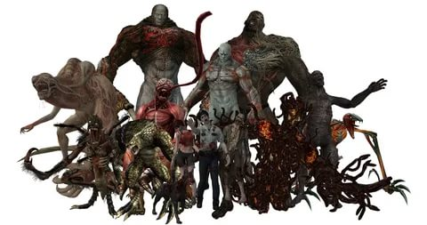
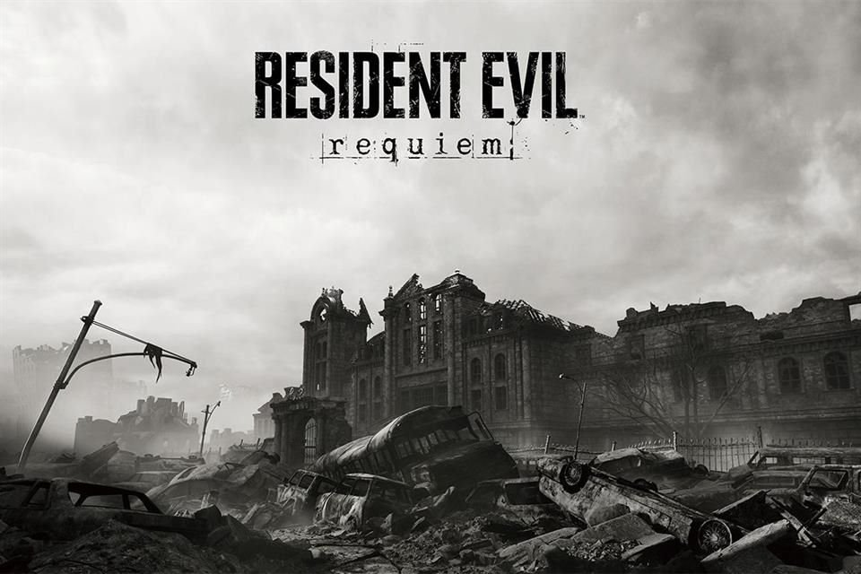
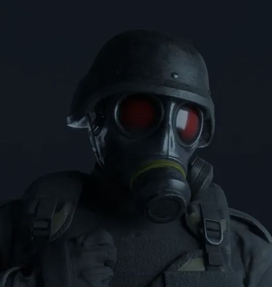

En el universo de Resident Evil, las armas ilegales representan una etapa posterior al desarrollo
científico realizado por Umbrella Corporation. Estas armas no se limitan a su creación, sino que
abarcan su comercialización, distribución y uso en conflictos reales.
Tras la caída de Umbrella, los virus y armas biológicas comenzaron a circular en el mercado negro,
dando origen a una nueva era de bioterrorismo global.
Comercialización Ilegal de B.O.W.s

Umbrella no solo desarrollaba armas biológicas, sino que también las vendía ilegalmente a distintos
actores internacionales. Estas ventas eran realizadas en secreto para evitar la intervención de gobiernos.
Principales compradores
Gobiernos corruptos
Ejércitos privados
Organizaciones criminales
Consecuencias
Expansión global de armas biológicas
Pérdida de control por parte de Umbrella
Inicio del bioterrorismo moderno
Mercado Negro Bio-Orgánico

Después de los eventos de Raccoon City, las armas biológicas comenzaron a comercializarse
en redes clandestinas internacionales.
Características del mercado
Subastas ilegales de virus
Venta de muestras biológicas
Competencia entre corporaciones
Este mercado permitió que múltiples organizaciones accedieran a tecnología biológica avanzada,
aumentando el riesgo de brotes globales.
Robo y Contrabando de Virus
El robo de virus fue uno de los factores más importantes en la expansión del bioterrorismo.
Científicos y agentes traicionaron a Umbrella para vender información y muestras biológicas.
Casos importantes
William Birkin intenta vender el Virus G
Albert Wesker roba el Virus T
Impacto
Multiplicación de brotes virales
Aparición de nuevas organizaciones armadas
Descontrol total de las armas biológicas
Operaciones Especiales Ilegales

Las operaciones especiales fueron misiones encubiertas realizadas por Umbrella y otras organizaciones
para controlar, ocultar o aprovechar las armas biológicas.
Encubrimiento
Incluía la eliminación de testigos, destrucción de evidencia y manipulación de información para evitar
que el público conociera los experimentos.
Recuperación de muestras
Equipos especializados eran enviados a zonas infectadas para recuperar virus y datos de investigación.
Operaciones de eliminación
Se eliminaban científicos, empleados o sobrevivientes que pudieran revelar información confidencial.
Pruebas en campo
Las armas biológicas eran utilizadas en ciudades reales para analizar su comportamiento en combate.
Raccoon City es el ejemplo más importante.
Espionaje e infiltración
Agentes infiltrados robaban información o vendían datos a otras organizaciones.
Militarización privada
Tras la caída de Umbrella, corporaciones y mercenarios comenzaron a realizar estas operaciones
de forma independiente.
Impacto Global
Las armas ilegales y las operaciones clandestinas provocaron una crisis mundial sin precedentes.
Destrucción de ciudades completas
Expansión del bioterrorismo
Pérdida del control gubernamental
Creación de mercados ilegales globales
Como resultado, el mundo de Resident Evil se convierte en un entorno donde las armas biológicas
son utilizadas como herramientas de poder y control.